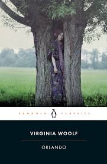
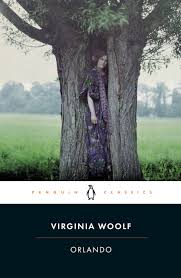

Nascida em Londres, Virginia Woolf (1882 - 1941), foi uma escritora modernista que produziu obras em diversos gêneros literários (Mrs. Dalloway, Um Quarto Todo Seu, As Ondas), sendo até hoje a maior referência em literatura inglesa em todos eles. Seu estilo de escrita modernista é marcado pelo forte fluxo de consciência e introspeção, mas sempre questionando o papel da mulher na literatura e reivindicando a elas esse lugar por direito.


 
